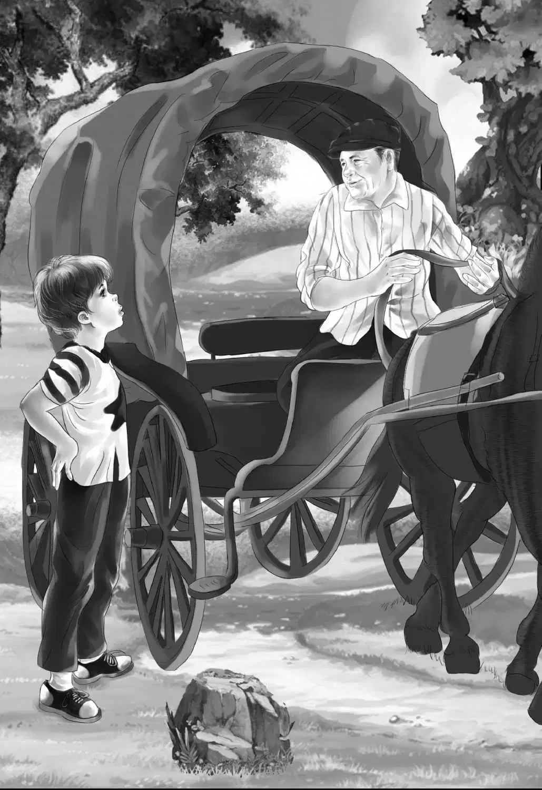

The next morning the Aldens waited only long enough to eat breakfast and change the name of the houseboat.
Benny climbed up the ladder to change the letters. He said， “I hate to take The Watch Alden down. But you’ve had your day， Watch. Today it will be The Mrs. McGregor.”
When Benny climbed down， Henry was saying， “I wish we could find out why those horses are so thin. We know that Mr. April pays Sam well.”
Jessie added， “Sam said he gives as much as he can to Dolly.”
“And we know Sam loves his horse，” said Violet. “It doesn’t seem to make sense.”
Benny thought a minute. Then he laughed. “The only way to find out is to ask Sam，” he said.
“Oh， no，” said Jessie， shaking her head. “I would never ask Sam！”
“I would，” said Benny. “I bet Sam would tell me.”
Henry laughed. “I bet he would， too， Ben. Try it！No harm done if he won’t tell.”
Violet said， “Sam likes Benny. I think he would say that Benny was comical， just as Mr. Rivers did.”
So the Aldens locked up the houseboat and went back to April Center. As they walked through the gate Benny looked around for Sam. But Sam was nowhere in sight.
“You’ll like the country store， Ben，” said Henry， walking along. “They will have everything in there—cloth， sugar， cheese， and a cracker barrel.”
The cracker barrel was the first thing the Aldens saw when they went into the store. The storekeeper looked up at Benny and said， “Help yourself to a cracker！”
There was a hole in the cover of the wooden barrel. Benny put his hand into the hole and pulled out a cracker. Henry came next. He said to the man， “That hole is almost too small for my hand.”
“That is why the hole was made small，” replied the man. “Nobody can get two crackers out at one time. They used to try in the old days，but they never could do it.”
Three old men were sitting around an old stove， smoking pipes. Grandfather looked around the room and said， “This looks exactly like the old country store I went in when I was a boy. See the old-fashioned stick candy？”
“Red-and-white stripes，” said Benny. “I bet it is peppermint.”
The storekeeper said， “Try the coffee grinder， folks. Right over there.”
They all went to look at the coffee grinder. Jessie said， “I don’t suppose you sell the coffee， do you？”
“Oh， yes， I do，” the storekeeper answered. “You can buy coffee， candy， cheese， and oats for horses. All the other things are just to look at.”
Jessie said， “We’ll take a pound of coffee， then.”
The man poured a pound of brown coffee beans into the coffee mill. He said to Benny， “Grind away， son！”
Benny took the handle and turned it round and round. It was hard work. The ground coffee came out in a bag and was all ready to use.
“Did you say you sell cheese？” asked Mr. Alden.
“Right here！” The man showed them an enormous round cheese， as big as an automobile tire. “I’ll cut off whatever you want.”
“I never saw such a big cheese，” said Jessie. “I’ll take a pound.”
“Now what about oats for a horse？” asked Henry.
“Yes， we sell oats，” said the man. “But what do you want oats for？”
“I was thinking about Sam’s horse， Dolly，” said Henry.
The storeman stopped smiling and shook his head. “It’s a funny thing about that，” he said. “Sam used to buy a lot of oats for Dolly. And his brother Jeff did， too. But they don’t buy so much now. Not half as much as they used to. I can’t understand it. It’s been going on for almost a year.”
Benny said， “Oh， let’s buy some oats for Sam. We can tell him it’s a birthday present for Dolly.”
Henry nodded. The man took a big bag of oats out of a corner and gave it to Henry.
As the Aldens went out to the street， they saw Sam and Dolly. Sam had no customers， but he smiled at the Aldens.
Benny said to his family， “You go along. I’d rather stay here with Sam. He isn’t busy right now. I’ll be along soon.”
Benny climbed up into the wagon and sat down beside the old jockey.
“How is Dolly today？” he asked.
“Fine，” said Sam. “See her ears now？She knows we’re talking about her.” Indeed， her ears were turned backwards.
“I’ve been thinking， Sam，” said Benny. “It seems to me that you are in some kind of trouble.”
The old driver turned to the young boy and said， “That is surely kind of you. Most people don’t care about an old carriage-driver.”
“I care，” said Benny.
“I know you do，” said Sam.
“Well， Sam， are you in trouble？”
“No， not exactly，” said Sam.
“What do you mean， not exactly？” asked Benny.
“Well， I got no trouble myself， but I hear that my brother Jeff has. So I feel poorly. Yes， boy， I’m sure enough worried about Jeff.”
The man and the boy sat a while without saying a word.
Then Benny said， “Sam， my grandfather is a smart man. Maybe he could get Jeff out of trouble.”
“No， boy. Nobody could do that，” Sam answered.
Benny put his hand on Sam’s arm. “Now， Sam！What a silly thing to say！You don’t know what my family can do when we get started.But how can we help you when we don’t know what the trouble is？Don’t you trust me？”
Sam drew a long breath. “I’d like to trust you， boy. I’d surely like to！”
“Well， then， tell me about Jeff. Has he done anything wrong？”
Sam turned and looked at Benny. “I know Jeff wouldn’t do anything wrong. I don’t believe it！I never believed it！”
“Who says he’s done something wrong？” asked Benny.
“Well， somebody says he has，” answered Sam. “But I can’t tell you who it is. Then I’d be in trouble.”
“You’re in trouble now，” said Benny.
Sam was thinking. He looked at Benny for a long time. He knew he could trust Benny. Sam took a deep breath and said， “I’m going to tell you， boy. A man comes to me every month and I give him half my pay. If I don’t， he says he will tell the police about Jeff.”
“I see，” said Benny， nodding his head. “So that is why you can’t afford to feed Dolly enough.”
“Yes， that’s why. I give Dolly as much as I can. But I have to eat， too.”
Benny nodded again. Then he said， “Would you believe me， Sam， if I said you would be out of trouble soon？”
“I don’t know，” said Sam. “That would be a great day.”
Benny began to climb out of the wagon. He said， “Well， don’t worry anymore， Sam. It won’t be long now！”
Benny walked away. As he looked back， he saw three people getting into Sam’s wagon. He stepped out of sight. He waited until Sam had turned the wagon around and trotted off. Then Benny walked slowly down the street looking for Jeff. He found him outside an old-fashioned house waiting for his customers.
Benny looked up at Jeff and said， “May I come and sit with you a minute？”
“Sure，” said Jeff. He was surprised.
When Benny was in the front seat， he said， “You don’t know me， Jeff， but Sam does.”

“Yes， I know you，” said Jeff. “Sam told me all about the Aldens. He said the old man is very kind.”
“You mean my grandfather？” asked Benny. “He isn’t old.”
“Oh， I don’t mean old，” said Jeff. “He’s just grown up.”
“I wonder if you would talk to me， Jeff，” asked Benny.
“Oh， yes， I’d like to talk to you. Any of your family. I’d be glad to.”
“Well， then，” said Benny， “tell me this. Are you in trouble？”
Jeff turned around to Benny just as his brother had done. “No，” he said. “But don’t tell Sam.”
“Why？” asked Benny. “I won’t tell Sam.”
“I just worry about Sam，” said Jeff. “I hear tell he is in trouble. So I worry all the time.”
Benny said， “Do you think Sam has done anything wrong？”
“No！” said Jeff. “Sam wouldn’t. He’s my twin brother.”
“But somebody told you he has. Is that right？” asked Benny.
“Yes， that’s right. But I still don’t believe him. And don’t you tell， boy！”
“I won’t，” said Benny. “You know， Jeff， I thought something was wrong.”
“Now why did you ever think that？” asked Jeff.
“Well， because Molly is so thin，” said Benny.
“Think of that！” said Jeff. “Nobody cares about an old thin horse.”
“You care a lot about Molly， don’t you？” asked Benny.
“Oh， yes. I brush her and brush her. See how she shines？”
“But you don’t feed her very well，” said Benny quietly.
“No，” said Jeff sadly. “But I do the best I can.”
“I know that，” said Benny. He began to climb down. He had learned what he wanted to know. Then he had an idea. He said， “By the way， Jeff， have you seen two men in a big black car driving around April Center？I’m interested in cars and it’s a special one.”
Jeff looked quickly at Benny and then away. It seemed as if he was going to nod， but he said， “Two men in a black car？I see lots of men and lots of black cars. They all look alike to me.”
Jeff looked so worried that Benny said， “Jeff， don’t worry anymore. In four or five days everything will be all right.”
“What do you mean， boy？” asked Jeff.
“I can’t tell you that because I don’t know what it will be myself. But you’ll see very soon.”
“Don’t you tell Sam！” Jeff warned.
“No， I won’t，” promised Benny. He almost ran to find his family. He felt light as a feather！How wonderful it would be when Sam and Jeff were happy again， and Molly and Dolly had enough to eat. He was sure Henry and Jessie could think of some way to help the old jockeys.
Benny found his family just leaving an old house. Jessie saw Benny coming.
“Oh， let’s go home，” she said. “We can hear all about Sam and Dolly on the boat where nobody is listening.”
“Let’s give this heavy bag of oats to Sam first，” said Henry.
Jeff came by just then with an empty wagon. He heard what Henry said. “I’ll see that Sam gets it，” he said， stopping his horse.
“Good，” said Henry. “Please take some oats for Molly， too.” Henry lifted the bag into Jeff’s front seat. “Thank you，” said Henry. “That will save time.”
“Thank you，” said Jeff， driving off.
The houseboat， The Mrs. McGregor， was just as they had left it. Henry poled it out into the river， and the Alden family sat down on the deck to talk. Benny told his story to the end.
Then Henry said， “You did well， Ben. We know now what is bothering Sam and Jeff. Let’s think of everything else that seems wrong. First， that vase was lost at the auction. And Mrs. Young and her sister are worried， too.”
Jessie said， “Don’t forget the waitress in the restaurant.”
“Yes， the waitress，” agreed Henry. “Then the smoke on this boat. Oh， by the way， Ben. A policeman came into the old house while we were there， and I told him about our clock. He said he would tell Mr. Rivers.”
“Good！” said Benny.
“We still don’t know why the boy in the red cap ran away from the auction so fast，” said Violet.
“And remember， the two policemen said something strange was going on up and down this river，” said Mr. Alden.
Benny said， “And the black car！”
“Right. The black car and the two men，” said Jessie. “Do you think the black car has anything to do with all these people， Henry？”
Henry replied， “Yes， that is exactly what I do think.”
Benny added， “But remember， we’ve still got four or five days！”